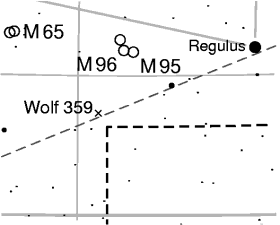

You can use all LaTeX macros in PP3 labels that are allowed in
horizontal boxes (like \mbox{...}). Additionally, you can use
many commands from the PSTricks package.
The most important pitfall is the backslash \, because when
using quotes as string delimiters, you have to write is as `\\'.
Let's have a look at a more complex example:
text "\\small Wolf 359\\hskip0.3em
\\psdots[dotstyle=+,dotangle=45](0,0)"
at 10.902 7.32 color 0.3 0.3 0.9333 towards W_ ;
This prints an `x' at the position of the star Wolf 359 and prints the label `Wolf 359' at the top left next to it:

The row of LaTeX macros consists of the following elements:
\small
\small' there, too.
\hskip0.3em
\psdots[dotstyle=+,dotangle=45](0,0)
dotstyle=+' option
makes it a `+', and the `dotangle=45' option turns it
by 45 degree, which makes it an `x' effectively.
The clever bit is the fact that this macro is the very last one in the
row. Since it says `towards W_' (towards left, on baseline) in
the PP3 command, this means that the `x' lies
exactly on the celestial coordinates given after the `at'
option.